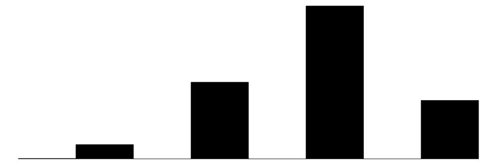

R Code [zeigen / verbergen]
pacman::p_load(tidyverse, magrittr, readxl, gtsummary,
janitor, see, patchwork, modelsummary)Letzte Änderung am 06. September 2024 um 10:46:06
“Alles was überhaupt gedacht werden kann, kann klar gedacht werden. Alles was sich aussprechen lässt, lässt sich klar aussprechen.” — Ludwig Wittgenstein, Satz 4.116
Wir nutzen die deskriptive Statistik um Zahlen zusammenzufassen. Zahlen, die wir an Individuen oder Beobachtungen erhoben haben. Diese Zahlen fassen wir dann in einem Datensatz zusammen. Das heißt wir haben am Ende einen Datensatz mit Spalten in denen sich Zahlen befinden vorliegen. Wir nehmen hier als Beispiel den Datensatz zu den Sprungweiten der Hundeflöhe. Wir wollen jetzt den Datensatz in wenigen Zahlen zusammenfassen (eng. summarize). Wie können wir mit wenigen Zahlen die Sprungweite charakterisieren? Oder aber eine Aussage über die Infektionen machen? Dafür helfen uns dann die statistischen Maßzahlen in diesem Kapitel.
Warum mit wenigen Zahlen Daten zusammenfassen? Wenn wir das Ergebnis präsentieren wollen, dann müssen es wenige Zahlen sein, die den Datensatz gut zusammenfassen. Wir haben ja nicht den Platz ganze Exceltabellen abzubilden. Auch ist diese Form der Datendarstellung sehr unübersichtlich. Daher ist es wichtig zu verstehen, dass wir dutzende bis hunderte Zahlen aus einem Datensatz durch meist eine oder zwei statistische Maßzahlen beschreiben wollen. Wir brauchen die statistischen Maßzahlen später um teilweise noch extrem größere Datensätze darstellen zu können. Ebenso werden wir die Maßzahlen aus diesem Kapitel dafür verwenden statistische Tests und Modelle zu rechnen. Springen die Hundeflöhe im Mittel weiter als die Katzenflöhe? Hier würden wir dann die Mittelwerte der Sprungweiten vergleichen. Dazu dann aber später in einem anderen Kapitel mehr.
Nun ist es so, dass wir nicht jede Spalte an Zahlen in einem Datensatz gleich zusammenfassen können. Wir du schon in dem Kapitel über die Zahlen und Buchstaben in R gesehen hast unterscheidet R Zahlen je nach Eigenschaften der Zahlen. Das macht aber nicht nur R so, sondern jedes statistische Programm. Nicht jede statistische Maßzahl passt zu jeder Zahlenreihe. Es gibt es nicht nur “Zahlen”, sondern auch kontinuierliche Zahlen oder aber kategoriale Zahlen. Eine Besonderheit stellen Zahlen dar, die eine Eigenschaft von Tieren nur mit zwei Ausprägungen beschreiben.
Die Tabelle 16.1 zeigt nochmal die gekürzte Übersicht über einzelne Variablennamen aus dem Hundeflohdatensatz und deren zugehörigen Zahlen sowie deren Bezeichnung in R, als Skalenniveau und welcher Verteilungsfamilie die Variable angehören würde. Leider ist es so, dass wieder gleiche Dinge unterschiedliche benannt werden. Aber an dieses doppelte Benennen können wir uns in der Statistik schon mal gewöhnen.
| Variablenname | Beispiel | R | Skalenniveau | Verteilungsfamilie |
|---|---|---|---|---|
| jump_length | 5.7, 8.9, 11.8 | numeric | continuous | Gaussian |
| flea_count | 18, 22, 17 | integer | discrete | Poisson |
| grade | 8, 6, 7 | ordered | categorical / ordinal | Ordinal |
| infected | 0, 1 | factor | dichotomous / binary / nominal | Binomial |
Soweit so kompliziert. Wir gehen jetzt aber mal die gängigen statistischen Maßzahlen für verschiedene Zahlen, die wir so erheben können, durch. Dabei fokussieren wir einmal auf die händische Berechnung und ich zeige dann aber auch die Berechnung in R. Dabei nehmen wir erstmal den Hundeflohdatensatz als Beispiel für die händische Berechnung und für die Automatisierung in R am Ende des Kapitels unseren Gummibärchendatensatz.
Wir wollen folgende R Pakete in diesem Kapitel nutzen.
pacman::p_load(tidyverse, magrittr, readxl, gtsummary,
janitor, see, patchwork, modelsummary)An der Seite des Kapitels findest du den Link Quellcode anzeigen, über den du Zugang zum gesamten R-Code dieses Kapitels erhältst.
In diesem Kapitel wollen wir uns einmal die Daten zu den Sprungweiten verschiedener Hundeflöhe sowie die Eigenschaften der Flöhe einmal genauer ansehen. Wir laden also als erstes einmal die Daten und filtern nur die Hunde aus den Daten. Wir wollen jetzt die Spalten oder eben auch Variablen der Daten einmal sinnvoll zusammenfassen und durch wenige statistische Maßzahlen beschreiben.
flea_dog_tbl <- read_excel("data/flea_dog.xlsx") Die Tabelle 16.2 zeigt nochmal die Daten dargestellt. Zur Erinnerung, wir wollen jetzt die Spalten mit wenigen Zahlen zusammenfassen.
animal gibt an, dass wir es hier mit Hundeflöhe zu tun haben. Die Tabelle ist im Long-Format dargestellt.
| animal | jump_length | flea_count | weight | grade | infected |
|---|---|---|---|---|---|
| dog | 5.7 | 18 | 2.1 | 8 | 0 |
| dog | 8.9 | 22 | 2.3 | 8 | 1 |
| dog | 11.8 | 17 | 2.8 | 6 | 1 |
| dog | 5.6 | 12 | 2.4 | 8 | 0 |
| dog | 9.1 | 23 | 1.2 | 7 | 1 |
| dog | 8.2 | 18 | 4.1 | 7 | 0 |
| dog | 7.6 | 21 | 3.2 | 9 | 0 |
Wir fangen jetzt erstmal mit den kontinuierlichen Variablen an und schauen dann später auf die kategorialen Variablen. Nehmen wir also als erstes Beispiel die Sprungweiten in [cm] von Hundeflöhen. Wir messen die Sprungweiten von sieben Hundeflöhen und erhalten dabei folgende Werte in [cm]: 5.7, 8.9, 11.8, 5.6, 9.1, 8.2 und 7.6. Wir schreiben diese Sprungweiten nun als \(y\) in einen Vektor in der folgenden Form auf.
\[ y = \{5.7, 8.9, 11.8, 5.6, 9.1, 8.2, 7.6\}. \]
c() und den Zuweisungspfeil <-.In R würde der Vektor der Zahlen etwas anders aussehen, aber das hat eher was mit der Schreibweise der Mathematik und der Informatik zu tun. Inhaltlich sehen wir hier gleichen Informationen.
y <- c(5.7, 8.9, 11.8, 5.6, 9.1, 8.2, 7.6) Wir wollen nun die Sprungweiten in \(y\) beschrieben und durch wenige andere Zahlen zusammenfassen. Einige dieser statistischen Maßzahlen sind dir vermutlich schon bekannt, andere eher neu. Wir gehen jetzt also gemeinsam eine Menge an statistischen Maßzahlen durch. Nicht alle wirst du immer brauchen und dir auch nicht merken müssen. Wichtig ist zu wissen, dass es die folgenden statistischen Maßzahlen gibt und das du dann im Zweifel den Begriff nachschlagen kannst. Ich mache das im Prinzip auch nicht anders.
Wenn du dir andere Statistikbücher anschaust, dann wird meist die Variable, mit der wir den Mittelwert berechnen, mit \(x\) bezeichnet. Wir machen das hier nicht denn wir haben später für das \(x\) eine andere Verwendung. In einem statistischen Modell schauen wir uns den Zusammenhang von \(y \sim x\) an.
Als \(y\) bezeichnen wir die Messwerte in einem Datensatz. Wir nennen das \(y\) auch Zielgröße oder eben yield (deu. Ertrag).
Als \(x\) bezeichnen wir die Einflussgröße oder exchange (deu. Veränderung, etwas schief übersetzt). Wir haben hier W-Worte als Faktorvariable vorliegen. Was misst du? Wo? Wann? Womit?
Die Sprungweite von Hunde- und Katzenflöhen ist das \(y\). Wir messen die Sprungweite. Das \(x\) sind die beiden Tierarten Hund und Katze, die wir miteinander vergleichen wollen. Glaube mir, es wird nachher leichter zu verstehen. Dafür nehmen wir jetzt einen etwas schwierigen Weg.
Der Mittelwert einer Zahlenreihe beschreibt den Schwerpunkt der Zahlen. Was soll das Bedeuten? Was ist der Schwerpunkt von Zahlen? Du kannst dir das wie eine Wippe vorstellen, der Mittelwert liegt so, dass links und rechts des Mittelwerts gleiche Abstände zu den Zahlen vorliegen. Der Mittelwert wird auch als Lageparameter benannt. Der Mittelwert ist damit auch der Lageparameter einer Verteilung. Er beschreibet die numerische Stelle, wo die Verteilungskurve am höchsten ist. Wir schreiben den Mittelwert mit einem Strich über den Vektor, der die Zahlen enthält. Im Folgenden ist die Formel für den Mittelwert der Sprungweite in [cm] der Hunde gezeigt. Der Mittelwert ist in dem Sinne eine künstliche Zahl, da der Mittelwert häufig nicht in den beobachteten Zahlen vorkommt.

Wir werden immer mal wieder Formeln vereinfachen. Zum Beispiel nur \(\sum\) schreiben anstatt \(\sum_i^n\), wenn wir einen Vektor aufsummieren und uns die Indizes sparen. Ja, das ist nicht schön, aber einfacher.
Im Folgenden sehen wir einmal wie der Mittelwert mathematisch oder schrittweise in R berechnet wird. Beachte hierbei die unterschiedliche Schreibweise. Wir haben hier ja auch zwei unterschiedliche Sprachen abgebildet. Wir haben nämlich eine mathematische Sprache und einmal eine Programmiersprache vorliegen.
\[ \bar{y} = \sum_{i=1}^{n}\cfrac{y_i}{n} = \cfrac{5.7 + 8.9 + 11.8 + 5.6 + 9.1 + 8.2 + 7.6}{7} = \cfrac{56.9}{7} = 8.13 \]
Einmal der Vektor y mit den Zahlen, die wir benutzen wollen.
y <- c(5.7, 8.9, 11.8, 5.6, 9.1, 8.2, 7.6)
y[1] 5.7 8.9 11.8 5.6 9.1 8.2 7.6Die Summe von y.
sum(y)[1] 56.9Die Länge des Vektors y oder eben die Anzahl \(n\) gleich der Fallzahl.
length(y)[1] 7Und dann einmal händisch der Mittelwert von y berechnet.
sum(y)/length(y)[1] 8.128571mean(y)[1] 8.128571Wir sagen also, dass im Durchschnitt oder im Mittel die Hundeflöhe 8.13 cm weit springen. Wir addieren dazu einmal alle sieben Sprungweiten der Hundeflöhe einmal auf und teilen die Summe durch die Gesamtanzahl an Flöhen.
In R können wir den Mittelwert einfach mit der Funktion mean() berechnen. Dann nutzen wir nochmal den Pipe Operator |> für die Berechnung des Mittelwertes. Wir wollen dann den Mittelwert noch auf die zweite Kommastelle runden. Das machen wir dann mit der Funktion round(). Du findest in Kapitel 10 den Einstieg für die Programmierung in R. Da findest du auch die Erklärung für den Pipe Operator |>.
## mit pipe-Operator
y |> mean() |> round(2)[1] 8.13Wir erhalten das gleiche Ergebnis wie oben in unserer händischen Rechnung. Die Hundeflöhe springen im Mittel 8.13 cm weit. Ja, für so einfache Beispiele ist es natürlich etwas kompliziert R zu nutzen und Code zu schreiben, später wird uns der Code aber sehr helfen.
Der Mittelwert ist eine bedeutende statistische Maßzahl der Normalverteilung. Später wirst du noch mehr über Verteilungen von Zahlen erfahren und deshalb hier schon mal die kurze Verbindung vom Mittelwert zur Normalverteilung. Daher merken wir uns hier schon mal, dass wir den Mittelwert brauchen werden. Auch wenn wir darüber nachdenken ob sich zwei Gruppen unterscheiden, so nutzen wir hierzu den Mittelwert. Unterscheiden sich die mittleren Sprungweiten in [cm] von Hunde- und Katzenflöhen?
Im Gegensatz zum arithmetischen Mittel ist das geometrische Mittel nur für nicht negative Zahlen \(y\) definiert. Wir können also für negative Zahlen kein geometrische Mittel berechnen. Das geometrische Mittel ist daher nur für echt positive Zahlen sinnvoll. Wenn eine der Zahlen in \(y\) gleich Null ist, ist schon das ganze Produkt der Zahlen gleich Null. Somit ist dann das geometrische Mittel sinnlos. Schauen wir uns einmal die Formel des geometrischen Mittels an.
\[ \bar{y}_\mathrm{geom} = \sqrt[n]{\prod_{i=1}^n{y_i}} = \sqrt[n]{y_1 \cdot y_2 \dotsm y_n} = (y_1 \cdot y_2 \dotsm y_n)^{1/n} \]
In R können wir das geometrische Mittel einfach mit der Funktion geometric.mean() aus dem R Paket {psych} berechnen.
c(4, 3, 6, 9) |>
psych::geometric.mean()[1] 5.045378Dann rechnen wir doch auch gleich mal ein Beispiel mit den vier Zahlen \(y = \{4, 3, 6, 9\}\).
\[ \bar{y}_\mathrm{geom} = \sqrt[4]{4 \cdot 3 \cdot 6 \cdot 9} =\sqrt[4]{648} = 5.045 \]
Um die Besonderheit des geometrische Mittelwerts zum arithmetischen Mittel zu verstehen, nehmen wir einmal ein Beispiel mit nur den Zahlen \(y = \{1,9\}\). Bei der geometrischen Mittelwertbildung weichen beide Werte vom Mittelwert um denselben Multiplikator ab. Diese Eigenschaft ist beim arithmetischen Mittel nicht gegeben. So ergibt sich aus den Zahlen 1 und 9 das arithmetische Mittel 5. Dabei ist die 1 vom Mittelwert 5 um Faktor 5 entfernt, während die 9 lediglich um Faktor 1.8 davon entfernt liegt.
Das geometrische Mittel aus 1 und 9 hingegen ergibt den Mittelwert \(\bar{y}_\mathrm{geom} = 3\). Sowohl der niedrige Wert 1 wie auch der hohe Wert 9 sind vom Mittelwert 3 um den Faktor 3 entfernt. Der Unterschied zwischen arithmetischem und geometrischem Mittelwert kann beträchtlich sein, was in der Praxis unter Umständen zur Fehlinterpretation von Durchschnittsangaben führt.
Das geometrische Mittel ist der einzige korrekte Mittelwert, wenn normalisierte Ergebnisse gemittelt werden, daher Zahlen und Ergebnisse, die als Verhältnis zu Referenzwerten dargestellt werden. Eine Anwendung ist hierbei der Wirkungsgrad von zum Beispiel Pflanzenschutzmitteln.
Bis jetzt können wir mit dem Mittelwert \(\bar{y}\) die Lage oder den Mittelpunkt unserer Zahlenreihe \(y\) beschreiben. Uns fehlt damit aber die Information über die Streuung der Zahlen. Sind die Zahlen alle eher gleich oder sehr verschieden? Liegen die Zahlen daher alle bei dem Mittelwert oder sind die Zahlen weit um den Mittelwert gestreut. Es macht ja einen bedeutenden Unterschied, ob wir \(n\)-mal das “Gleiche” messen oder eben \(n\)-mal sehr unterschiedliche Zahlen.
Abweichungsquadrate sind ein wichtiges Konzept in der Statistik. Wenn wir wissen wollen, wie groß eine Abweichung von einer Zahl zu einer anderen ist, dann nutzen wir immer das Quadrat der Abweichung und bilden die Quadratsumme.
Die Streuung der Zahlen \(y\) um den Mittelwert beschreibt die Varianz. Wir schreiben für die Varianz auch \(s^2\). Wir berechnen die Varianz indem wir von jeder Zahl \(i\) den Mittelwert aller Zahlen \(\bar{y}\) abziehen und dann das Ergebnis quadrieren. Das machen wir für alle Zahlen und addieren dann die Summe auf. Wir erhalten die Quadratsumme von \(y\). Wie immer ist Mathematik in Textform etwas sperrig, deshalb einmal auch hier die Formel. Dann kannst du dir auch noch die Umsetzung in R anschauen. Auch hier die etwas sperrige Form in Schritten, später nutzt du dann die Funktion var().
\[ s^2 = \sum_{i=1}^n\cfrac{(y_i - \bar{y})^2}{n-1} = \cfrac{(5.7 - 8.13)^2 + ... + (7.6 - 8.13)^2}{7-1} = \cfrac{27.59}{6} = 4.6 \]
Einmal der Vektor y mit den Zahlen, die wir benutzen wollen.
y <- c(5.7, 8.9, 11.8, 5.6, 9.1, 8.2, 7.6)
y[1] 5.7 8.9 11.8 5.6 9.1 8.2 7.6Die Summe von y.
sum(y)[1] 56.9Die Länge des Vektors y minus 1 oder eben die Anzahl \(n - 1\) gleich der Fallzahl.
length(y) - 1[1] 6Dann einmal die Formel für die Varianz zusammengebaut. Statt \(8.13\) kannst du auch sum(y)/length(y) oder eben mean(y) schreiben.
sum((y - 8.13)^2)/(length(y) - 1)[1] 4.59905var(y)[1] 4.599048Häufig irritiert dich das \(n-1\) in der Formel. Hier gibt es an dieser Stelle keine einfache Erklärung. Dafür müsstest du mehr über die Grundgesamtheit und die Stichprobe wissen. Es gibt aber eine Erklärung unter Intuitive explanation for dividing by \(n-1\) when calculating standard deviation? oder gleich direkt Bessel-Korrektur.
Warum rechnen wir hier eigentlich das Quadrat? Der Mittelwert liegt ja genau in der Mitte der Werte. Das heißt, die Abstände der Zahlen über dem Mittelwert sind exakt so groß wie die Abstände unter dem Mittelwert. Wir nennen diese Abstände \(\epsilon\) (grie. epsilon). Wenn du jetzt alle positiven \(\epsilon\)-Werte aus der folgenden Tabelle addierst und auch alle negativen \(\epsilon\)-Werte, dann wirst du sehen, dass die beiden Werte gleich groß unterschiedlichen Vorzeichen sind. Wir haben also mit den Abweichungen vom Mittelwert nichts gewonnen. Daher nutzen wir die quadratische Abweichung.
| Index \(i\) | y | \(\boldsymbol{\epsilon_i = y_i - \bar{y}}\) | \(\boldsymbol{\epsilon}\) - Wert |
|---|---|---|---|
| 1 | 5.7 | \(\epsilon_1 = y_1 - \bar{y}\) | \(5.7 - 8.13 = -2.43\) |
| 2 | 8.9 | \(\epsilon_2 = y_2 - \bar{y}\) | \(8.9 - 8.13 = 0.77\) |
| 3 | 11.8 | \(\epsilon_3 = y_3 - \bar{y}\) | \(11.8 - 8.13 = 3.67\) |
| 4 | 8.2 | \(\epsilon_4 = y_4 - \bar{y}\) | \(8.2 - 8.13 = 0.07\) |
| 5 | 5.6 | \(\epsilon_5 = y_5 - \bar{y}\) | \(5.6 - 8.13 = -2.53\) |
| 6 | 9.1 | \(\epsilon_6 = y_4 - \bar{y}\) | \(9.1 - 8.13 = 0.97\) |
| 7 | 7.6 | \(\epsilon_7 = y_5 - \bar{y}\) | \(7.6 - 8.13 = -0.53\) |
Die Varianz beschreibt also die Streuung der Zahlen im Quadrat um den Mittelwert. Das heißt in unserem Beispiel, dass die Sprungweite eine Varianz von \(4.6cm^2\) hat. Wir können Quadratzentimeter schlecht biologisch interpretieren. Wir leben nicht in einer Welt mit quadratischen Einheiten. Deshalb führen wir gleich die Wurzel der Varianz als die Standardabweichung ein. Die Standardabweichung ist also einfach die Wurzel der Varianz. Da die Standardabweichung aber sehr bedeutend ist, kommen wir auf die Standardabweichung gleich nochmal in einem extra Abschnitt zu sprechen. Wir benötigen die Varianz häufig nur als Zwischenschritt um die Standardabweichung zu berechnen. Das Konzept der Abweichungsquadrate benötigen wir aber in der Varianzanalyse (ANOVA) und für die Beschreibung einer Normalverteilung zusätzlich zum Mittelwert.
Die Standardabweichung \(s\) ist die Wurzel der Varianz \(s^2\). Wo die Varianz die Abweichung der Sprungweite in [cm\(^2\)] beschreibt, beschreibt die Standardabweichung die Streuung der Sprungweite in [cm]. Damit können wir dann die Standardabweichung viel besser interpretieren als die Varianz.
\[ s = \sqrt{s^2} = \sqrt{4.6} = 2.14 \]
Einmal der Vektor y mit den Zahlen, die wir benutzen wollen.
y <- c(5.7, 8.9, 11.8, 5.6, 9.1, 8.2, 7.6)
y[1] 5.7 8.9 11.8 5.6 9.1 8.2 7.6Die Summe von y.
sum(y)[1] 56.9Die Länge des Vektors y minus 1 oder eben die Anzahl \(n - 1\) gleich der Fallzahl.
length(y) - 1[1] 6Dann einmal die Formel für die Varianz zusammengebaut. Statt \(8.13\) kannst du auch sum(y)/length(y) oder eben mean(y) schreiben.
sum((y - 8.13)^2)/(length(y) - 1)[1] 4.59905Dann noch die Wurzel aus der Varianz um die Standardabweichung zu berechnen. Denn nichts anderes haben wir ja bis jetzt noch nicht berechnet.
sqrt(sum((y - 8.13)^2)/(length(y) - 1))[1] 2.14454sd(y)[1] 2.144539Wir können also schreiben, dass die Flöhe im Mittel 8.13 \(\pm\) 2.14cm weit springen. Somit haben wir die Lage und die Streuung der Zahlenreihe \(y\) der Sprungweite in [cm] mit zwei Zahlen beschrieben. Wichtig ist hierbei zu merken, dass wir den Abstand vom Mittelwert nach “oben” und “unten” jeweils mit dem gleichen Abstand beschreiben. Unsere Zahlen können also nicht mehr in die eine als in die andere Richtung streuen.
Wir schreiben immer den Mittelwert plusminus die Standardabweichung. Also immer in der Form \(\bar{y} \pm s\). Meistens willst du dann aber nicht eine Tabelle haben, sondern wir nutzen dann den Mittelwert plusminus die Standardabweichung um uns Säulendiagramme zu erstellen.
Merke dir hier nochmal, dass du die Varianz nur als Zwischenschritt für die Standardabweichung berechnest. Später interessiert dich die Standardabweichung, die du dann auch in deinen Berichten oder deiner Abschlussarbeit nutzt. Die Standardabweichung wird nicht nur im Kontext der Agarwissenschaften genutzt sondern auch in anderen wissenschaftlichen Disziplinen. Mehr dazu dann in dem folgenden Kasten, wenn dich das noch mehr interessiert.
Das Wow!-Signal ist das Signal, wenn es um die Entdeckung von vermeidlichen außerirdischen Lebens geht. In der folgenden Abbildung siehst du einmal das namensgebende Dokument mit dem handschriftlichen “Wow!”. Was sagt uns nun diese seltsame Abbildung aus?

Das Wow!-Signal ist eine Messung eines Radioteleskops. Für die Einfachheit, es ist faktisch die Messung von elektromagnetischen Signalen, die aus dem Kosmos zu uns kommen. Zur Bestimmung der Signalstärke relativ zum Hintergrundrauschen wurde die Standardabweichung verwendet. Der Signalwert wurde durch ein alphanumerisches Zeichen dargestellt. Ein Leerzeichen bedeutete, dass das empfangene Signal weniger als eine Standardabweichung über dem Rauschen lag. Werte von 1 bis 9 gaben an, dass das Signal 1 bis 9 Standardabweichungen über dem Rauschen lag. Noch stärkere Signale (Faktor 10 bis 35 über dem Rauschen) wurden durch die Buchstaben A bis Z dargestellt, wobei der Buchstabe U dem Intervall 30–31 entspricht. Üblicherweise sollte der Ausdruck viele Leerzeichen und gelegentlich niedrige Zahlen enthalten.
Was sehen wir also auf der Abbildung? Ein ungemein starkes Signal! Wie wahrscheinlich ist eine solche Abweichung? Signale innerhalb von einer Standardabweichung kommen in 68% der Fälle vor. Wenn wir dann aber die Standardabweichung erhöhen, wird es sehr schnell sehr viel unwahrscheinlicher. Bei einer sechsfachen Standardabweichung sind wir schon bei drei Vorkommen in einer Million Fällen. Also extrem unwahrscheinlich für ein zufälliges Auftreten.
Neben dem Wow!-Signal gibt es noch die five sigma-Regel in der Teilchenphysik. Mehr dazu auf der Seite des CERN unter Why do physicists mention “five sigma” in their results?. In der Wirtschaft spricht man auch gerne von Six Sigma als ein Managementsystem zur Prozessverbesserung, statistisches Qualitätsziel und zugleich eine Methode des Qualitätsmanagements. Auch spannend, wo wir dann immer wieder die Standardabweichung finden.
Der Standardfehler ist eine statistische Maßzahl, die wir häufig im Kontext des statistischen Testens benutzen. Wenn wir den Mittelwert der Sprungweiten berichten dann gehört die Standardabweichung der Sprungweiten mit als beschreibendes, statistisches Maß dazu. Wir berichten keinen Mittelwert ohne Standardabweichung. Nun ist es aber so, dass der Mittelwert und die Standardabweichung von der Fallzahl abhängen. Je mehr Fallzahl bzw. Beobachtungen wir haben, desto genauer wird der Mittelwert sein. Oder anders ausgedrückt unserer in der Stichprobe unserer Daten ermittelte Mittelwert \(\bar{y}\) wird sich dem wahren, unbekannten Mittelwert \(\mu_y\) annähern. Das gleiche gilt auch für unsere beobachtete Standardabweichung \(s_y\), die sich der wahren, unbekannten Standardabweichung \(\sigma_y\) mit steigender Fallzahl annähert.
Aus diesem Grund brauchen wir noch einen Fehler bzw. eine statistische Maßzahl für die Streuung, die unabhängig von der Fallzahl ist. Damit erhalten wir dann den Standardfehler (abk. \(SE\) oder auch eng. standard error of the mean, abk. \(SEM\)). Mit der Fallzahl meinen wir hier die Anzahl an Beobachtungen. Wir skalieren also die Standardabweichung mit der Fallzahl indem wir die Standardabweichung durch die Wurzel der Fallzahl teilen.
\[ SE = \cfrac{s}{\sqrt{n}} = \cfrac{2.14}{\sqrt{7}} = \cfrac{2.14}{2.65} = 0.81 \]
Einmal der Vektor y mit den Zahlen, die wir benutzen wollen.
y <- c(5.7, 8.9, 11.8, 5.6, 9.1, 8.2, 7.6)
y[1] 5.7 8.9 11.8 5.6 9.1 8.2 7.6Die Summe von y.
sum(y)[1] 56.9Die Länge des Vektors y minus 1 oder eben die Anzahl \(n - 1\) gleich der Fallzahl.
length(y) - 1[1] 6Dann einmal die Formel für die Varianz zusammengebaut. Statt \(8.13\) kannst du auch sum(y)/length(y) oder eben mean(y) schreiben.
sum((y - 8.13)^2)/(length(y) - 1)[1] 4.59905Dann noch die Wurzel aus der Varianz um die Standardabweichung zu berechnen. Denn nichts anderes haben wir ja bis jetzt noch nicht berechnet.
sqrt(sum((y - 8.13)^2)/(length(y) - 1))[1] 2.14454Und dann den ganzen Term nochmal durch die Wurzel der Fallzahl.
sqrt(sum((y - 8.13)^2)/(length(y) - 1))/sqrt(length(y))[1] 0.8105598se <- sd(y)/sqrt(length(y))
se[1] 0.8105596Wir müssten ein Paket in R laden um den Standardfehler zu berechnen. Das Laden von zusätzlichen Paketen wollen wir hier aber vermeiden; wir können den Standardfehler auch einfach selber berechnen. Wir erhalten einen Standardfehler von \(0.81cm\). Diese Zahl ist in dem Sinne nicht zu interpretieren, da wir hier nur Experimente losgelöst von deren Fallzahl miteinander vergleichen können. Wenn du also zwei Sprungweitenexperimente mit unterschiedlichen Fallzahlen \(n_1\) und \(n_2\) bezüglich der Streuung in den Experimenten vergleichen willst, dann nutzt du den Standardfehler, da der Standardfehler unabhängig von der Fallzahl der beiden Experimente ist. Auf der anderen Seite können wir ohne die berichtete Fallzahl nicht vom Standardfehler auf die Standardabweichung schließen.
Das Buch A biologist’s guide to statistical thinking and analysis von Fay und Gerow (2018) liefert in dem dem Abschnitt A quick guide to interpreting different indicators of variation nochmal einen Überblick über die verschiedenen Arten der Variation eines Datensatz und deren Interpretation. Ich habe die Interpretationen abhängig von der Variationsquelle nochmal in der Tabelle 16.4 zusammengefasst. Die Standardabweichung ist eine biologische Interpretation der Variation oder Streuung in den Daten. Die beiden anderen Quellen Standardfehler und Konfidenzintervall ist dagegen statistische Maßzahlen, die anders interpretiert werden können und müssen. Hier ist der Kontext dann ein anderer.
| Art des Fehlerbalkens | Überschneidung der Fehlerbalken | Nicht überlappende Fehlerbalken |
|---|---|---|
| Standardabweichung | Kein Rückschluss möglich | Kein Rückschluss möglich |
| Standardfehler | Kein signifikanter Unterschied zwischen den Mittelwerten | Kein Rückschluss möglich |
| Konfidenzintervall | Kein signifikanter Unterschied zwischen den Mittelwerten | Signifikanter Unterschied zwischen den Mittelwerten |
In der Abbildung 16.2 siehst du dann die Aussagen der Tabelle 16.4 nochmal visualisiert. Alle Mittelwerte haben die gleichen Werte für die beiden Behandlungen für den Fall der sich überschneidenden Fehlerbalken sowie für die sich nicht überlappenden Fehlerbalken. Je nach Variationsquelle sehen die Fehlerbalken anders aus und haben auch eine andere Interpretation.

Je nachdem, was du nun zeigen möchtest, kannst du jetzt entscheiden, welche Variationsquelle du nutzen willst. Wir benötigen den Standardfehler eigentlich nicht zum Berichten mit Fokus von biologischen Ergebnissen. Bei manchen Modellen und Outcomes macht aber der Standardfehler mehr Sinn als die Standardabweichung. Wir können nämlich sonst Werte erhalten die biologisch keinen Sinn ergeben. Der Standardfehler ist nicht als Zahl biologisch interpretierbar und somit eine reine statistische Größe. Tabelle 16.5 zeigt die Zusammenfassung und den Vergleich von Standardabweichung und Standardfehler nochmal aus einer anderen Perspektive. Das Konfidenzintervall ist eine statistische Größe, die wir dann in den folgenden Kapiteln noch behandelt werden.
| Standardabweichung | Standardfehler |
|---|---|
| … ist eine Aussage über die Streuung der erhobenen Werte einer Stichprobe. | … ist eine Aussage über die Genauigkeit des Mittelwertes einer Stichprobe. |
| … hängt von der biologischen Variabilität ab. | … abhängig von der Messgenauigkeit |
| … ist ein beschreibendes Maß. | … ist ein statistisches Maß. |
| … ist nur wenig durch die Größe der Stichprobe beineinflussbar. | … steht im direkten Verhältnis zur Größe der Stichprobe. |
Die Spannweite erlaubt uns zu überprüfen was die kleinste Zahl und die größte Zahl ist. Also uns das Minimum und das Maximum einer Zahlenreihe anzuschauen. Auf den ersten Blick mag das nicht so sinnig sein, aber wenn wir uns hunderte von Beobachtungen anschauen, wollen wir wissen, ob wir nicht einen Fehler bei Eintragen der Daten gemacht haben. Wir wissen eigentlich, dass z.B keine negativen Zuwachsraten auftreten können. In R können wir die Spannweite mit range() wie folgt berechnen. Wir erhalten den minimalen und maximalen Wert.
\[ y_{range} = y_{max} - y_{min} = 11.8 - 5.6 = 6.2 \]
Einmal die minimalen und maximalen Werte der Sprungweite berechnen.
range(y)[1] 5.6 11.8Dann die Differenz zwischen den beiden Werten berechnen.
range(y) |> diff()[1] 6.2Die Hundeflöhe springen in einer Spannweite von 6.2 cm. Das kommt einem normal vor und wir würden meinen, dass Flöhe in diesem Bereich springen könnten. Die Spannweite ist nicht übertrieben groß. Der minimale Wert ist \(5.6cm\) und der maximale Wert ist \(11.8cm\) und somit sind beide Zahlen in Ordnung. Keine der beiden Zahlen ist übertrieben klein oder gar negativ. Später musst du dann selber schauen, ob die Zahlen in die biologische Fragestellung passen. Besonders wenn du Datenbanken ausliest, kann es schnell passieren, dass du unplausible Werte wiederfindest. Dann musst du diese Werte meist entfernen.
Wir merken uns, dass die Spannweite eine Maßzahl für die Validität der Daten ist. Hat das Experiment geklappt oder kamen da nur komische Zahlen bei raus, die wir so in der Realität nicht erwarten würden. Zum Beispiel negative Sprungweiten, weil wir einmal auf das Minuszeichen auf der Tastatur beim eingeben der Zahlen gekommen sind.
Jetzt haben wir uns eine Möglichkeit den Schwerpunkt von einer Zahlenreihe zu berechnen angeschaut. Nun gibt es aber noch eine weitere Möglichkeit die “Mitte” von Zahlen zu ermitteln. Wir wollen uns jetzt noch eine andere Art der Zusammenfassung von Zahlen anschauen. Anstatt mit den Zahlen zu rechnen und die Zahlen aufzusummieren, sortieren wir jetzt die Zahlen. Wir nehmen also die Zahlen aus dem Vektor \(y = \{5.7, 8.9, 11.8, 5.6, 9.1, 8.2, 7.6\}\) und sortieren diese Zahlen nach dem Rang. Wir rechnen dann mit den Rängen und nicht mehr mit den Werten der Zahlen. Die kleinste Zahl kriegt den kleinsten Rang, die nächst größere Zahl dann den nächsten Rang. Wir können R über die Funktion sort() nutzen um den Vektor \(y\) zu sortieren. Klar das geht auch schnell per Hand, aber wenn die Zahlenvektoren länger werden, dann ist so eien Funktion schon praktisch.
y |> sort()[1] 5.6 5.7 7.6 8.2 8.9 9.1 11.8Die neue Art die Mitte von dem sortierten Zahlenvektor zu bestimmen, nennen wir dann den Median berechnen. Der Median \(\tilde{y}\) ist die mittlere Zahl eines Zahlenvektors. Wir haben hier sieben Zahlen, also ist der Median die vierte Zahl. Wir müssen hier aber zwischen einer ungeraden Anzahl und einer geraden Anzahl unterscheiden.
Wenn wir eine ungerade Anzahl an Zahlen vorliegen haben, ist der Median die mittlere Zahl des Vektors \(y\): \[ 5.6, 5.7, 7.6, \underbrace{8.2,}_{Median} 8.9, 9.1, 11.8 \]
In R können wir den Median einfach mit der Funktion median()berechnen.
## ohne pipe-Operator
median(y) [1] 8.2## mit pipe-Operator
y |> median()[1] 8.2Wenn wir eine gerade Anzahl von Zahlen vorliegen haben, ist der Median der Mittelwert der beiden mittleren Zahlen des Vektors \(y\). Ich habe hier einfach die Zahl 13.1 aus dem Hut gezaubert. Es könnte auch eine beliebige andere Zahl sein, die größer als 11.8 ist. Nur damit wir hier eine gerade Anzahl an Zahlen haben: \[ 5.6, 5.7, 7.6, \underbrace{8.2, 8.9,}_{Median = \tfrac{8.2+8.9}{2}=8.55} 9.1, 11.8, \color{blue}{13.1} \]
In R können wir den Median wieder einfach mit der Funktion median()berechnen. Wir müssen nur die Zahl 13.1 zu dem Vektor y mit der Funktion c() hinzufügen.
c(y, 13.1) |> median() [1] 8.55Der Median ist eine Alternative zu dem Mittelwert. Insbesondere in Fällen, wo es sehr große Zahlen gibt, die den Mittelwert in der Aussage verzerren, kann der Median sinnvoll sein. Wenn der Mittelwert stark von dem Median abweicht, deutet dies auf eine schiefe Verteilung oder aber Ausreißer in den Daten hin. Wir müssen dann in der explorativen Datenanalyse der Sachlage nachgehen.
Zur Veranschaulichung des Unterschiedes zwischen Median und Mittelwert nehmen wir die Mietpreise in New York. Der mittlere Mietpreis für eine 2-Zimmerwohnung in Manhattan liegt bei 5000 Dollar pro Monat. In den mittleren Mietpreis gehen aber auch die Mieten der Billionaires’ Row mit ein. Der mediane Mietpreis liegt bei 4000 Dollar. Die hohen Mieten ziehen den Mittelwert nach rechts.
Bei dem Mittelwert beschreibt die Standardabweichung die Streuung der Daten um den Mittelwert. Bei dem Median sind dies die Quartile. Die Quartile beschreiben die Streuung der Daten um den Median. Damit beschreiben wir also die Streuung der Beobachtungen um den Median anhand der Quartile. Um die Quartile bestimmen zu können, teilen wir die Daten in 100 Quantile. Du kannst dir Quantile wie Prozente vorstellen. Wir schneiden die Daten also in 100 Scheiben. Das geht natürlich erst wirklich, wenn wir hundert Zahlen haben. Deshalb hilft man sich mit Quartilen - von Quarta, ein Viertel - aus. Tabelle 16.6 zeigt dir da nochmal den Zusammenhang.
| Quantile | Quartile | Median |
|---|---|---|
| 25% Quantile | 1\(^{st}\) Quartile | |
| 50% Quantile | 2\(^{nd}\) Quartile | Median |
| 75% Quantile | 3\(^{rd}\) Quartile |
Damit haben wir sogar eine Dreifachbelegung der “mittleren” Zahl. Zum einen handelt es sich um das 50% Quantil, weil 50% der Zahlen größer und 50% der Zahlen kleiner sind. Zum anderen handelt es sich auch um das 2\(^{nd}\) Quartile. Da die Mitte einer Zahlenreihe als Median definiert ist, haben wir dann hier auch den Median vorliegen.
Wir bestimmen die Quartile wie den Median. Wir müssen unterscheiden, ob wir eine ungerade Anzahl an Zahlen oder eine gerade Anzahl an Zahlen vorliegen haben.
Bei einer ungeraden Anzahl von Zahlen, ist das 1\(^{st}\) Quartile die mittlere Zahl des unteren Mittels und das 3\(^{rd}\) Quartile die mittlere Zahl des oberen Mittels des Vektors \(y\): \[ 5.6, \underbrace{5.7,}_{1st\ Quartile} 7.6, 8.2, 8.9, \underbrace{9.1,}_{3rd\ Quartile} 11.8 \]
Bei einer geraden Anzahl von Zahlen, ist das 1\(^{st}\) Quartile der Mittelwert der beiden mittleren Zahl des unteren Mittels und das 3\(^{rd}\) Quartile der Mittelwert der beiden mittleren Zahlen des oberen Mittels des Vektors \(y\). Ich habe hier einfach die Zahl 13.1 aus dem Hut gezaubert. Es könnte auch eine beliebige andere Zahl sein, die größer als 11.8 ist. Nur damit wir hier eine gerade Anzahl an Zahlen haben: \[ 5.6, \underbrace{5.7, 7.6,}_{1st\ Quartile = \tfrac{5.7+7.6}{2}=6.65} 8.2, 8.9, \underbrace{9.1, 11.8}_{3rd\ Quartile = \tfrac{9.1+11.8}{2}=10.45} \color{blue}{13.1} \]
Das 95% Quantile und das 97.25% Quantile werden wir später nochmal im statistischen Testen brauchen. Auch hier ist die Idee, dass wir die Daten in hundert Teile schneiden und uns dann die extremen Zahlen anschauen.
In R können wir den Median einfach mit der Funktion quantile() berechnen. Wir berechnen hier das 25% Quantile also das 1\(^{st}\) Quartile sowie das 50% Quantile also den Median und das 75% Quantile also das 3\(^{rd}\) Quartile.
y |> quantile(probs = c(0.25, 0.5, 0.75)) |> round(2) 25% 50% 75%
6.65 8.20 9.00 c(y, 13.1) |> quantile(probs = c(0.25, 0.5, 0.75)) |> round(2) 25% 50% 75%
7.12 8.55 9.77 Warum unterscheiden sich die händisch berechneten Quartile von den Quartilen aus R? Es gibt verschiedene Arten der Berechnung. In der Klausur nutzen wir die Art und Weise wie die händische Berechnung hier beschrieben ist. Später in der Anwendung nehmen wir die Werte, die R ausgibt. Die Abweichungen sind so marginal, dass wir diese Abweichungen in der praktischen Anwendung ignorieren wollen.
Der Interquartilesabstand (IQR) beschreibt den Abstand zwischen dem 1\(^{st}\) Quartile und dem 3\(^{rd}\) Quartile. Daher ist der Interquartilesabstand (IQR) ähnlich der Spannweite zwischen dem maximalen und minimalen Wert. Wir benötigen das Interquartilesabstand (IQR) in der explorativen Datenanalyse wenn wir einen Boxplot erstellen wollen.
\[ IQR = 3^{rd}\,\mbox{Quartile} - 1^{st}\,\mbox{Quartile} = 9.1 - 5.7 = 3.4 \]
Wir verwenden das IQR als Zahl eher selten.
Wenn wir einen Zahlenvektor wie durch \(y = \{5.7, 8.9, 11.8, 5.6, 9.1, 8.2, 7.6\}\) beschrieben zusammenfassen wollen, haben wir zwei Möglichkeiten.
Im Gegensatz zu der Varianz ist der Variationskoeffizient ein relatives Streuungsmaß, das heißt, der Variationskoeffizient hängt nicht von der Maßeinheit von \(y\) ab. Die Motivation für den Variationskoeffizient ist, dass ein \(y\) mit großem Mittelwert häufig eine größere Varianz aufweist als eine mit einem kleinen Mittelwert. Da die Varianz und die daraus abgeleitete Standardabweichung nicht normiert sind, kann ohne Kenntnis des Mittelwerts nicht beurteilt werden, ob eine Varianz groß oder klein ist. Der Variationskoeffizient ist eine Normierung der Varianz. Ist die Standardabweichung somit größer als der Mittelwert, so ist der Variationskoeffizient größer 1. Der Variationskoeffizient wird häufig verwendet, um die Variation zwischen zwei verschiedenen Datensätzen zu vergleichen.
Wir können den Variationskoeffizient basierend auf dem Mittelwert und der Standardabweichung berechnen. In unserem Beispiel würden wir als die Standardabweichung \(s\) und den Mittelwert \(\bar{y}\) in die Formel einsetzen.
\[ v = \cfrac{s}{\bar{y}} = \cfrac{2.14}{8.13} = 0.26 \]
Einmal der Vektor y mit den Zahlen, die wir benutzen wollen.
y <- c(5.7, 8.9, 11.8, 5.6, 9.1, 8.2, 7.6)
y[1] 5.7 8.9 11.8 5.6 9.1 8.2 7.6Die Summe von y.
sum(y)[1] 56.9Die Länge des Vektors y minus 1 oder eben die Anzahl \(n - 1\) gleich der Fallzahl.
length(y) - 1[1] 6Dann einmal die Formel für die Varianz zusammengebaut. Statt \(8.13\) kannst du auch sum(y)/length(y) oder eben mean(y) schreiben.
sum((y - 8.13)^2)/(length(y) - 1)[1] 4.59905Dann noch die Wurzel aus der Varianz um die Standardabweichung zu berechnen. Denn nichts anderes haben wir ja bis jetzt noch nicht berechnet.
sqrt(sum((y - 8.13)^2)/(length(y) - 1))[1] 2.14454Dann nochmal den Mittelwert berechnen den wir nochmal brauchen. Aber auch hier getht natürlich auch die Built-in Funktion mean(y).
sum(y)/length(y)[1] 8.128571Dann einmal alles zusammen und wir haben den Variationskoeffizient Schritt für Schritt berechnet.
sqrt(sum((y - 8.13)^2)/(length(y) - 1))/(sum(y)/length(y))[1] 0.2638274var_coef <- sd(y)/mean(y)
var_coef[1] 0.2638273Wir können den Variationskoeffizient auch basierend auf dem Median berechnen.
\[ v_r=\cfrac{x_{0.75}-x_{0.25}}{\tilde{x}_{0.5}} \]
In unserem Fall müssen wir hier dann die Quartile und den Median in die Formel einsetzen.
\[ v_r=\cfrac{9.1 - 5.7}{8.2} = 0.41 \]
Im Bereich der Agrarwissenschaften kommt der Variationskoeffizient eher selten vor. Der Variationskoeffizient ist eben eine statistische Maßzahl des Labors. Aber dennoch kommt der Variationskoeffizient immer mal wieder vor. Ich berechne denn Variationskoeffizient immer in R direkt aus der Standardabweichung und dem Mittelwert oder aber ich baue mir die Formel in R selber. So schwer ist es dann auch nicht.
var_coef <- function(y) {
return(sd(y)/mean(y))
}
var_coef(y)[1] 0.2638273Neben der Darstellung von kontinuierlichen Zahlen, wollen wir auch häufig kategoriale Zahlen sinnvoll darstellen und zusammenfassen. Zwar können wir auch ohne weiteres die mittlere Note berechnen, aber meistens wollen wir dann doch wissen, wie viele Noten jeweils vergeben worden sind. Auch wenn wir uns mit einer \(0/1\) Variable beschäftigen, also zum Beispiel infiziert ja/nein, wollen wir diese Variablen zusammenfassen. Wir wollen hier also Häufigkeiten (eng. frequency) berechnen und darstellen. Dabei gibt es verschiedene Arten von Häufigkeiten, die wir uns jetzt nacheinander einmal anschauen.
Fangen wir also einmal mit der Variable infected an. Wir haben in dieser Variable abgelegt, ob der Hund mit einem Floh infiziert ist 1 oder eben nicht infiziert ist 0. Wie du siehst, kodieren wir das “Ja” mit einer 1 und das “Nein” mit einer 0.
\[ y_{infected} = \{0, 1, 1, 0, 1, 0, 0\}. \]
In R würde der Vektor der Zahlen etwas anders aussehen, aber das hat eher was mit der Schreibweise der Mathematik und der Informatik zu tun. Inhaltlich sehen wir hier gleichen Informationen.
y_infected <- c(0, 1, 1, 0, 1, 0, 0) Schauen wir uns als einmal die drei Möglichkeiten die kategorialen Daten als Häufigkeiten abzubilden an. Wir können zum einen die absoluten Häufigkeiten berichten. Wir sagen also ganz einfach, wie viele Hunde sind von der Gesamtheit infiziert.
Wir zählen die Anzahl an infizierten Tieren und berichten die Anzahl zusammen mit der gesamt Anzahl an Tieren. Also haben wir dann als absolute Häufigkeit \(f_{absolut} = n_{infiziert} / n_{gesamt}\) zu berichten.
Damit könne wir auch die absoluten Häufigkeiten einfach ausrechnen und berichten. Wir haben ja drei infizierte Hunde von sieben Hunden vorliegen.
\[ f_{infected} = 3 / 7 \]
Als nächstes schauen wir uns die relativen Häufigkeiten an. Relative Häufigkeiten werden weit häufiger berichtet. Wir haben ja dann die guten, alten Prozente vorliegen.
Wir zählen die infizierten Tiere und teilen die Anzahl an infizierten Tiere durch die gesamte Anzahl an Tieren. Wir rechnen also die relative Häufigkeit mit \(f_{relativ} = n_{infiziert} / n_{gesamt}\).
Sieht erstmal aus wie die absolute Häufigkeit, aber hier rechnen wir den Term dann auch aus. Damit teilen wir dann unsere drei infizierten Hunde durch die gesamte Anzahl von sieben Tieren.
\[ f_{infected} = \cfrac{3}{7} = 0.43 \]
Meistens schreiben wir dann aber einen Hybriden aus absoluter und relativer Häufigkeit mit \(3 / 7\; (43\%)\). Wir ergänzen also die absoluten Häufigkeiten um die relativen Häufigkeiten. Ist dann eigentlich doppelt gemoppelt, aber wir wollen häufig auch sehen auf welcher Gesamtzahl die relative Häufigkeit sich begründet.
Neben der klassischen Häufigkeit, die wir durch die prozentuale Angabe kennen, gibt es auch noch die Chance. Die Chance infiziert zu sein, ist was anderes als die Wahrscheinlichkeit infiziert zu sein. Die Wahrscheinlichkeit ist eine relative Häufigkeit. Die Chance berechnet sich dabei etwas anders, den die Chance ist ein Anteil.
Die Chance beschreibt den Anteil der infizierten Tiere an den nicht infizierten Tieren. Oder aber wir schreiben für die Chance \(f_{chance} = n_{1} : n_{0}\) mit \(n_1\) gleich der Anzahl an infizierten Tieren und \(n_0\) gleich der Anzahl der nicht infizierten also gesunden Tiere.
Wie du im Folgenden siehst, ergibt sich bei der Chance ein anderer Wert als bei der relativen Häufigkeiten. Wir haben also eine andere Chance infiziert zu sein, als die Wahrscheinlichkeit infiziert zu sein. Das ist auch so gewollt, denn wir betrachten ja bei der Chance etwas anders. Wir schauen den Anteil der drei infizierten Tiere im Vergleich zu den vier gesunden Tieren an. Wir erhalten dann eine Chance von \(75\%\) um infiziert zu sein.
\[ f_{infected} = 3 : 4 = 0.75 \]
Wenn wir die Häufigkeiten berechnen wollen, dann nutzen wir auch wieder R. Es gibt viele Funktionen in R, die wir nutzen könne. Hier erstellen wir eine Tabelle in R mit der Funktion tabyl() aus dem R Paket {janitor}. Es gibt noch andere Möglichkeiten, die schauen wir uns aber gleich im nächsten Abschnitt an.
Einmal die sehr simplen Form der Berechnung für die infizierten Hunden. Die Funktion tabyl() liefert neben der absoluten Häufigkeiten dann auch die relativen Häufigkeiten. Deshalb mag ich diese Funktion sehr gerne für das schnelle Nachschauen.
y_infected |>
tabyl() y_infected n percent
0 4 0.5714286
1 3 0.4285714Oder aber etwas komplexer für die Noten der Hunde. Hier siehst du dann nochmal schöner, wie sich die Tabelle aufbaut.
flea_dog_tbl |>
pull(grade) |>
tabyl() pull(flea_dog_tbl, grade) n percent
6 1 0.1428571
7 2 0.2857143
8 3 0.4285714
9 1 0.1428571Damit sind wir dann auch schon durch mit den Häufigkeiten. Selten berichten wir die reinen Häufigkeiten jeweils separat sondern in einer großen Übersichtstabelle. Um diese großen Übersichtstabelle und deren Erstellung wollen wir uns jetzt im nächsten Abschnitt einmal anschauen.
Der folgende Abschnitt ist nicht relevant für eine Klausur. Wir brauchen aber die Automatisierung in R um später sinnvoll Daten in einer Abschlussarbeit oder einem Projekt auswerten zu können. Also keine Angst, bitte überspringt den Abschnitt, wenn du nur für die Klausur lernst.
Im Folgenden wollen wir einmal den Datensatz zu den Gummibärchen zusammenfassen und zu beschreiben. Hier können wir nicht einfach so einen Überblick kriegen in dem wir uns einfach nur die Daten anschauen. Die Exceltabelle ist dafür viel zu lang um einen Überblick zu erlangen. Laden wir also einmal den Datensatz und wählen nur ein paar Spalten aus, damit wir hier nicht zu viel Tabellen produzieren.
gummi_tbl <- read_excel("data/gummibears.xlsx") |>
select(gender, height, age, count_color,
most_liked) |>
mutate(gender = as_factor(gender))Wir erhalten das Objekt gummi_tbl mit dem Datensatz in Tabelle 18.1 nochmal als Auszug dargestellt. Wir brauchen aber nicht alle Spalten aus dem ursprünglichen Datensatz und somit ist die Tabelle etwas übersichtlicher. Wir schauen uns also dann mal zwei kontinuierlichen und kategorialen Variablen an.
| gender | height | age | count_color | most_liked |
|---|---|---|---|---|
| m | 193 | 35 | 3 | lightred |
| w | 159 | 21 | 5 | yellow |
| w | 159 | 21 | 6 | white |
| w | 180 | 36 | 5 | white |
| … | … | … | … | … |
| m | 187 | 24 | 6 | darkred |
| m | 182 | 24 | 4 | green |
| w | 170 | 23 | 4 | white |
| w | 180 | 24 | 6 | green |
Ich stelle jetzt zwei R Pakete mit {gtsummary} und {modelsummary} vor, die du nutzen kannst um Daten zusammenzufassen. Es gibt aber noch weit mehr Pakete, aber wir konzentrieren uns mal auf diese beiden Pakete.
Neben den beiden vorgestellten gibt es natürlich auch Alternativen zu {gtsummary} und {modelsummary}. Da müsstest du dann aber mal selber schauen oder mich direkt Fragen. Wenn Interesse besteht kann ich auch noch andere Pakete vorstellen.
{gtsummary}Meiner Meinung nach ist das Paket {gtsummary} das Paket für die Erstellung von Übersichttabellen. Wie du auf derHilfeseite von gtsummary sehen wirst, gibt es wirklich sehr viele Möglichkeiten eine schöne Tabelle zu bauen. Neben der Zusammenfassung kannst du auch \(p\)-Werte aus statistischen Tests ergänzen oder auch die Differenzen zwischen zwei Gruppen. Hier ist wirklich viel möglich in dem Paket.
Fangen wir also einmal an eine Übersichtstabelle zu erstellen. Wir bauen eine simple Tabelle über alle Variablen in dem Datensatz gummi_tbl aufgeteilt nach dem Geschlecht. Das geht recht schnell und ohne viel Schnickschnack.
gummi_tbl |>
tbl_summary(by = gender)| Characteristic | m, N = 3561 | w, N = 3431 |
|---|---|---|
| height | 184 (178, 189) | 169 (164, 174) |
| age | 22.0 (21.0, 24.0) | 22.0 (20.0, 25.0) |
| count_color | ||
| 2 | 0 (0%) | 1 (0.3%) |
| 3 | 18 (5.1%) | 15 (4.4%) |
| 4 | 94 (26%) | 83 (24%) |
| 5 | 189 (53%) | 164 (48%) |
| 6 | 55 (15%) | 80 (23%) |
| most_liked | ||
| darkred | 137 (38%) | 135 (39%) |
| green | 83 (23%) | 91 (27%) |
| hellrot | 1 (0.3%) | 0 (0%) |
| lightred | 36 (10%) | 21 (6.1%) |
| none | 30 (8.4%) | 14 (4.1%) |
| orange | 15 (4.2%) | 15 (4.4%) |
| white | 38 (11%) | 51 (15%) |
| yellow | 16 (4.5%) | 16 (4.7%) |
| 1 Median (IQR); n (%) | ||
Das ist schon toll, sich so schnell eine Übersicht über die Daten zu schaffen. Wir haben alle Informationen, die wir brauchen, um mal eine Idee der Daten zu erhalten. Das ist dann immer so eine Sache, meist wollen wir dann die Daten dann doch nicht so exakt zusammenfassen. Aber auch hier hilft {gtsummary} mit sehr vielen Optionen. In der Abbildung 16.3 siehst du nochmal die Optionen in {gtsummary} übersetzt in die ausgegebene Tabelle.

{gtsummary} Optionen in die ausgegebene Tabelle.
Hier nochmal ein Beispiel mit mehr Optionen und dann einer anderen Darstellung. Siehe das hier aber nur als Beispiel, es gibt aber noch sehr viel mehr Optionen für die Darstellung. Du kannst auch {mean} ({sd}) durch {mean}+/-{sd} ersetzen um eine andere Schreibweise zu haben.
gummi_tbl |>
tbl_summary(
by = gender,
statistic = list(
all_continuous() ~ "{mean} ({sd})",
all_categorical() ~ "{n} / {N} ({p}%)"
),
digits = all_continuous() ~ 2,
label = count_color ~ "Anzahl Farben",
missing_text = "(Missing)"
)| Characteristic | m, N = 3561 | w, N = 3431 |
|---|---|---|
| height | 183.65 (7.80) | 168.84 (7.31) |
| age | 23.12 (4.44) | 23.66 (6.41) |
| Anzahl Farben | ||
| 2 | 0 / 356 (0%) | 1 / 343 (0.3%) |
| 3 | 18 / 356 (5.1%) | 15 / 343 (4.4%) |
| 4 | 94 / 356 (26%) | 83 / 343 (24%) |
| 5 | 189 / 356 (53%) | 164 / 343 (48%) |
| 6 | 55 / 356 (15%) | 80 / 343 (23%) |
| most_liked | ||
| darkred | 137 / 356 (38%) | 135 / 343 (39%) |
| green | 83 / 356 (23%) | 91 / 343 (27%) |
| hellrot | 1 / 356 (0.3%) | 0 / 343 (0%) |
| lightred | 36 / 356 (10%) | 21 / 343 (6.1%) |
| none | 30 / 356 (8.4%) | 14 / 343 (4.1%) |
| orange | 15 / 356 (4.2%) | 15 / 343 (4.4%) |
| white | 38 / 356 (11%) | 51 / 343 (15%) |
| yellow | 16 / 356 (4.5%) | 16 / 343 (4.7%) |
| 1 Mean (SD); n / N (%) | ||
Das ist soweit schon mal gut, aber wir wollen meist die Tabelle dann doch in Word haben. Nicht das du deine Abschlussarbeit auch mit \(\LaTeX\) schreiben könntest. Wir können dafür dann über die Funktion gtsave aus dem R Paket gt unsere Tabelle dann in einem Worddokument speichern. Wie toll ist das denn? Aber Achtung, bitte nicht in dein Hauptdokument abspeichern sondern immer eine Datei für eine Tabelle. Sonst kann es sein, dass du dir aus Versehen mal deine Tabellen überschreibst.
gummi_tbl |>
tbl_summary(by = gender) |>
as_gt() |>
gt::gtsave(filename = "example.docx")Frag mich gerne, wenn du weitere Informationen brauchst oder schau auch mal das Cheatsheet für gtsummary an. Du findest im Cheatsheet auch nochmal einen Überblick was alles möglich ist. Ich finde da den Überblick wirklich super.
{modelsummary}Eine andere Möglichkeit ist das R Paket {modelsummary}. Hier haben wir auch die Möglichkeit neben Modellvergleiche auch Daten in schönen Tabellen zusammenzufassen. Auch hier hilft die Hilfeseite von {modelsummary} um über die vielen Möglichkeiten einen Überblick zu erlangen. Meiner Meinung nach braucht das Paket {modelsummary} etwas mehr Programmiererfahrung für die Bedienung, kann dafür dann aber auch mehr. Du musst dich vorab um fehlende Daten kümmern oder aber die Funktionen entsprechend umdefinieren. Also entfernen wir erstmal grob alle fehlenden Werte mit na.omit(). Das ist jetzt aber die etwas ungünstige Variante, da wir das jetzt über alle Variablen die fehlenden Werte entfernen. Sobald eine Variable einen fehlenden Wert hat, schmeißen wir die ganze Beobachtung raus.
gummi_clean_tbl <- gummi_tbl |>
na.omit()Jetzt nutzen wir die Funktion datasummary_skim() um einmal einen schnellen Überblick zu produzieren. Wir müssen die Funktion aber zweimal nutzen. Einmal um uns die kontinuierlichen Variablen type = "numeric" anzuschauen und einmal für die kategorialen Variablen type = "categorical". Du kriegst zwar im Folgenden die fehlenden Werte angezeigt, aber das ist eben nur in der Funktion datasummary_skim() möglich.
gummi_clean_tbl |>
datasummary_skim(type = "numeric")| Unique | Missing Pct. | Mean | SD | Min | Median | Max | Histogram | |
|---|---|---|---|---|---|---|---|---|
| height | 53 | 0 | 176.4 | 10.6 | 147.0 | 176.0 | 205.0 | |
| age | 35 | 0 | 23.4 | 5.5 | 11.0 | 22.0 | 61.0 |  |
| count_color | 5 | 0 | 4.8 | 0.8 | 2.0 | 5.0 | 6.0 |  |
Dann nochmal die Anzahl und die relative Häufigkeit für die kategorialen Variablen. Ich habe hier jetzt nicht nochmal tiefer die Ausgabe modifiziert.
gummi_clean_tbl |>
datasummary_skim(type = "categorical")| N | % | ||
|---|---|---|---|
| gender | m | 356 | 50.9 |
| w | 343 | 49.1 | |
| most_liked | darkred | 272 | 38.9 |
| green | 174 | 24.9 | |
| hellrot | 1 | 0.1 | |
| lightred | 57 | 8.2 | |
| none | 44 | 6.3 | |
| orange | 30 | 4.3 | |
| white | 89 | 12.7 | |
| yellow | 32 | 4.6 |
Es gibt aber in dem R Paket {modelsummary} noch wirklich eine Menge mehr Optionen. Bitte schau da nochmal die Hilfeseite datasummary: Crosstabs, frequencies, correlations, balance (a.k.a. “table 1”), and more an. Wir gehen hier dann nicht tiefer auf die Möglichkeiten ein.
Und auch hier kannst du ganz einfach deine Tabelle in ein Worddokument speichern. Ich habe mich hier an der Hilfeseite datasummary als *.docx abspeichern orientiert und den Code etwas angepasst. Faktisch ergänzt du einfach die Option output = "table.docx". Damit speicherst du dann deine datasumary Tabelle in die Datei table.docx.
datasummary(height ~ gender * (mean + sd),
data = gummi_clean_tbl,
output = 'table.docx')